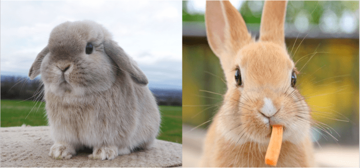
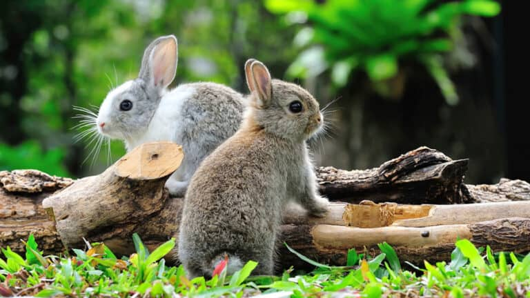
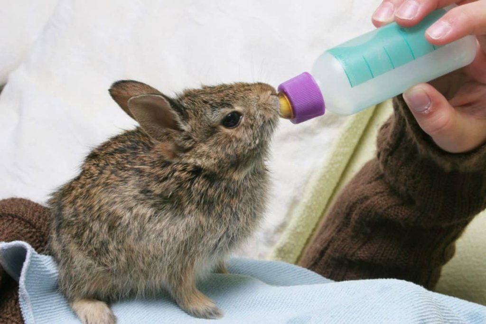
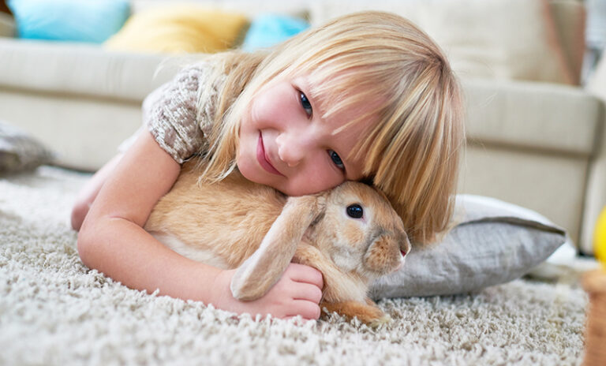
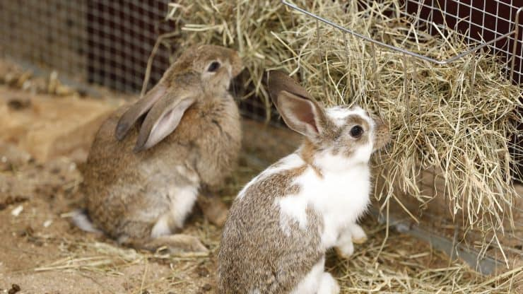
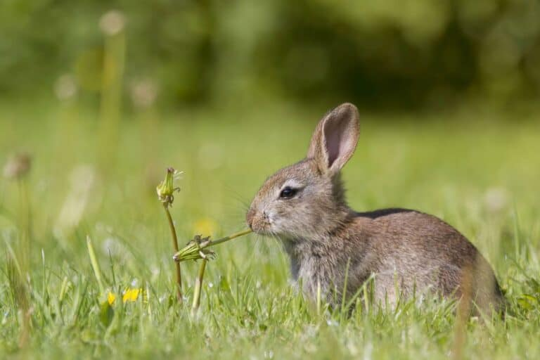
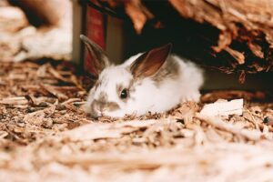
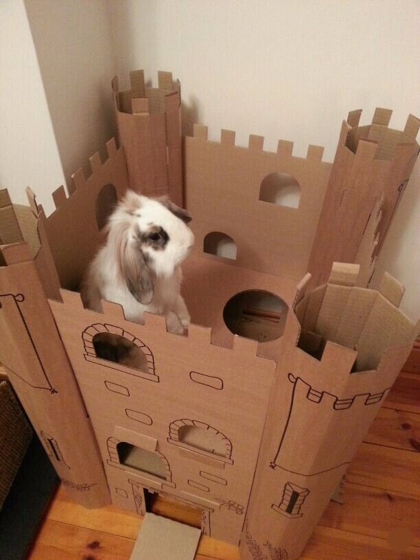
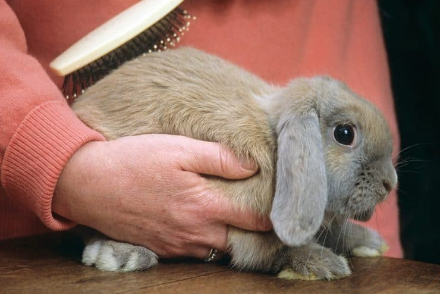

با اینکه خرگوش حیوان خانگی دوست داشتنی و نازی هست، در حقش ظلم و اجهاف شده. نگهداری خرگوش خانگی در ایران به درستی انجام نمیشه و خیلی از این کوچولوها به همین دلیل تلف میشن. در این مقاله با خرگوش بیشتر آشنا شده و مطمئن میشیم که بلدیم نگهداری خرگوش رو درست و اصولی انجام بدیم.
خرگوش ها نژادهای مختلفی دارن. یکی از نژادهای محبوب خرگوش در ایران، خرگوش لوپ هست.
خرگوش لوپ چیست؟
بیشترین نژادهای خرگوش که در ایران نگهداری میشن خرگوش معمولی و خرگوش لوپ هستن.
بیشترین تفاوت بین خرگوش معمولی و خرگوش لوپ نحوه ایستادن گوش های خرگوش لوپ هست. این خرگوشها به دلیل گوش های افتادشون ظاهر بسیار بانمکی دارن و پرطرفدارترن.

نگهداری از خرگوش لوپ
خرگوش لوپ کمیابتر و گران قیمتتر از خرگوش خانگی معمولی است.
در مورد تغذیه، جای خواب و مراقبتهای بهداشتی، طرز نگهداری خرگوش لوپ مثل سایر خرگوشهاست (در ادامه در موردش صحبت میکنیم.)
اما تفاوت مهمی که در مراقبت از خرگوش لوپ وجود داره اینه که این خرگوشها به دلیل نحوه قرارگیری گوش هاشون، نیازمند مراقبتهای ویژهای هستن.
گوشهای خرگوش لوپ مستعد عفونت کردن هستن و به همین خاطر باید حتما هفتهای یک بار گوشها رو نگاه کرده و از نظر داشتن ترشحات بیش از حد و عفونت، بررسی کنید.

خرگوش مینیاتوری یا کوتوله به چه خرگوشی گفته میشه؟
خرگوشهای کوتوله (dwarf) به خرگوشهایی گفته میشه که به خاطر ژن کوتولگی جثه و اندازهای کوچکتر از حد معمول دارن. کوتولگی شراطیه که هم در انسانها و هم در حیوانات، از جمله خرگوشها میتونه وجود داشته باشه.
از اونجایی که این خرگوشهای کوتوله از نظر ما آدما بامزهتر هستن پرورشدهندهها با جفتگیری و تکثیر این خرگوشها باعث زیاد شدنشون شدن و امروزه تو هرجای دنیا میتونید خرگوش مینیاتوری یا کوتوله رو پیدا کنید. خرگوش کوتوله هلندی یکی از معروفترین و کوچکترین انواع خرگوش خونگیه و معمولا کمتر ۱ کیلوگرم وزن داره. اگه دوست دارین با بقیه نژادهای محبوب خرگوش خونگی هم آشنا بشین، پیشنهاد میکنم مقاله انواع خرگوش مطالعه کنین.
نگهداری از خرگوش مینیاتوری
نگهداری خرگوش مینیاتوری به شرطی که از فروشنده معتبر بخرید تفاوت زیادی با نگهداری از سایر خرگوشها نداره. به طور کلی نکات مهم در نگهداری از خرگوش خانگی عبارتند از:
- جای خواب
- تغذیه
- بهداشت خرگوش و لونهش
- بازی و فعالیت خرگوش
بسیاری از خرگوشهای مینیاتوری که در ایران فروخته میشه در واقع نوزاد خرگوشهای معمولی هستن که زود از مادر جدا شدن و به خاطر اینکه شیر کمتری خوردن جثهای کوچکتر از حد معمول دارن و به اسم مینیاتوری با قیمتی بالا به فروش میرسن.
متاسفانه این خرگوشهای کوچولو معمولا چند روز تا چند هفته بعد از خریدن به خاطر تغذیه ناکافی و سیستم ایمنی بدن ضعیفشون میمیرن.
پس لطفا از پرورشدهنده و مراکز معتبر خرگوش بخرید یا حتی الامکان به سرپرستی قبول کنید.

نگهداری از خرگوش نوزاد و شیرخوار
خرگوش تازه به دنیا آمده تا ۳۰ روز به شیر مادرش «نیاز» داره و نباید به هیچ وجه از مادر جداش کرد. هرچند تا سن ۸ هفتگی هم باید پیش مادرش باشه و بعد از این مدت میتونه از مادر جدا بشه. بنابراین از خرید خرگوش نوزاد و زیر ۲ ماه اکیدا خودداری کنید.
ممکنه به نظرتون یه خرگوش نوزاد رها شده و بی مادر باشه و به کمک شما نیاز داشته باشه. اما این طور نیست! در ۹۹% موارد حتما مادرش برای پیدا کردن غذا و … جایی رفته و برمیگرده.
حالا اگه به هردلیلی یه خرگوش نوزاد دارید و باید ازش مراقبت کنید آستینا رو بالا بزنید؛ چون کار سختی در پیش دارید. البته قبل از همه خرگوش رو پیش دامپزشک ببرید تا معاینهش کنه و در مورد تغذیه و مراقبتهای لازم حتما با دامپزشک مشورت کنید.
اگه خرگوشی دارین که به تازگی زایمان کرده، باید حواستون به مراقبت از خودشم باشه، چون خرگوش مادر هم نیاز به مراقبتهای خاص خودش داره که پیشنهاد میکنیم حتما برای این مورد یه سری به مطلب زایمان خرگوش هم بزنین.
اولین مرحله آماده کردن لونه گرم و نرم برای خرگوش نوزاد
اولین کاری که باید انجام بدید تهیه یه لونه است. چند تا حوله نرم رو داخل یه جعبه بذارید یا از بستر مخصوص خرگوش که آماده در پتشاپها وجود داره تهیه کنید. یه حوله یا پارچه روی جعبه بکشید تا فضای داخل مثل لونه تاریک و گرم و نرم بشه اما به اندازه کافی هوای تازه وارد جعبه بشه.

تغذیه خرگوش نوزاد
برای غذا دادن میتونید از شیر خشک مخصوص بچه گربه یا شیر بز استفاده کنید.
برای شیر دادن به خرگوش از سرنگهای مخصوص که در پتشاپها وجود داره یا یه سرنگ کوچک استفاده کنید. بچه خرگوشها در حالت طبیعی روی شکمشون دراز میکشن و از سینه مادر شیر میخورن. برای شیر دادن هم باید این حالت رو حفظ کنید و آروم سرنگ رو فشار بدید تا شیر وارد دهنش بشه. حواستون باشه که یکدفعه سرنگ رو با شدت فشار ندید؛ چون ممکنه بچه خرگوش خفه بشه!
البته بعد از مدتی دستتون میاد که چه حجمی از شیر خرگوش رو سیر می کنه اما به طور کلی مقدار شیر روزانه مورد نیاز خرگوش نوزاد در سنین مختلف عبارتست از:
- خرگوش تازه به دنیا آمده تا یک هفته: ۴-۵ CC
- خرگوش ۱-۲ هفته: ۱۰-۱۵ سی سی
- خرگوش ۲-۳ هفته: ۱۵-۳۰ سی سی
- خرگوش ۳-۶ هفته (تا زمانی که از شیر گرفته بشه): ۳۰ سی سی
این مقدار شیر باید در دو نوبت در روز به خرگوش نوزاد داده بشه.
از روز ۱۵ یا همون دو هفتگی میتونید کمی غذای جامد هم بهش بدید و در نهایت در ۶-۸ هفتگی به طور کامل از شیر بگیریدش و غذای مخصوص خرگوش بهش بدید. توی مقاله غذای بچه خرگوش به طور مفصل در مورد نحوه تغذیه خرگوش نوزاد صحبت کردیم که پیشنهاد میکنیم حتما بخونیدش.
این ایبوک آموزش و تربیت خرگوش ها نوشته شده. بخونش، به کارهاش عمل کن و ببین خرگوشت چه جوری با هوشش و مهارت های که یاد میگیره، شگفت زده ات میکنه🤩 کلی هم بازی در این کتاب یاد دادیم که با انجامشون از وقت گذرونی با خرگوشت کلی لذت میبری.

اصول نگهداری از خرگوش در منزل
خرگوش چه معمولی باشه، چه لوپ یا میناتوری و کوتوله فرقی نمیکنه. اونها حیوانات خانگی باهوش، بی سر و صدا، آرام و بی آزاری هستن.
این حیوونای بامزه و دوست داشتنی برای نگهداری تو خونه خیلی مناسبن و نگهداریشون فضای زیادی نمیخواد؛ البته لازمه که اصول نگهداری از خرگوش رو بلد باشید. چون یه خرگوش برای اینکه زندگی سالم، شاد و طولانی داشته باشه نیازهای ویژه ای داره.
در ادامه مقاله با پت پرس همراه باشید تا براتون توضیح بدیم برای داشتن خرگوشی خوشحال و سالم چه اقداماتی باید انجام بدید.

قدم اول: لونه خرگوش خانگی چه ویژگیهایی باید داشته باشه؟
خرگوش ها میتونن به ۲ شکل نگهداری بشن:
- داخل خانه: اونا می تونن در داخل خانه در قفس مخصوص خرگوش زندگی کنن
- خارج از خانه : خرگوش ها رو میشه در فضایی مثل قفس بزرگ خرگوش، لونه خرگوش یا پاپی پن ( جای مخصوص نگهداری توله سگها) در بیرون از خانه نگه داشت.
قفس خرگوش باید انقدر بزرگ و جادار باشه که بتونن به راحتی جست و خیز کنن.
اگر خرگوش رو در داخل خونه نگه میدارید مطمئن بشید که جای اصلی خرگوش از شما و خانوادتون خیلی دور نیست که باعث بشه خرگوش احساس تنهایی کنه. حال یا اتاق نشیمن برای این کار مناسبند.

قدم دوم:خونه را برای نگهداری از خرگوش خانگی ایمن کنید
خرگوشها دوست دارن این ور و اون ور بدون و جستجو کنن. لازمه که برای فراهم آوردن یک فضای امن برای اون و محافظت از وسایلتون نکات ایمنی رو در خونه رعایت کنید که این شامل پوشوندن تمام سیمها با روکش پلاستیکی یا گذاشتنشون در لولهها و یا قرار دادنشون ۳ تا ۴ اینچ بالاتر و خارج از دسترس خرگوشتونه. اگه نمیخواین پوشش چوبی پایین دیوارهاتون گاز زده بشه میتونید اونها رو با محافظ پلاستیکی ۲ در ۴ سانتیمتر و یا نوار تخته کوب بپوشانید.
همینطور باید موانعی در بعضی بخشها ایجاد کنید تا خرگوشتون نتونه وارد بشه.
خرگوشها دوست دارن پایین تخت خوابها و چیزهای موجود در قفسه، گیاهان خانگی و خیلی چیزهای دیگه رو بجون. در واقع خرگوشتون سعی میکنه هر چیزی که دستش بهش میرسه رو بجوه.

قدم سوم: غذای خرگوش و تاثیرش در سلامتی و طول عمر
دادن غذای مناسب به خرگوش مهمترین نکته در نگهداری از خرگوش هست.
خیلی از ماها به حرف پرورش دهندهای که خرگوش رو ازش خریدیم گوش میکنیم و به همین دلیل به خرگوش غذای مناسب نمیدیم!
بخش عمده تغذیه خرگوش باید از کاه و علوفه باشه پس کاه همیشه باید براشون در قفس وجود داشته باشه.
درست متوجه شدین!!!
غذای خرگوشها برخلاف اونچه که هم تصور میکنن، هویج، جعفری یا سبزیجات نیست! خرگوشها نیاز دارن در طول روز مقدار زیادی کاه و علوفه خشبی که جویدنشون سخته مصرف کنن وگرنه دچار مشکلات دندانی و گوارشی میشن.
برای همین، غذای خرگوش تا ۶ ماهگی باید علوفه، کاه به همراه یونجه باشه و از ۶ ماهگی باید کم کم یونجه را از غذای خشگوشتون حذف کنید. دلیلش هم اینه که بدن خرگوش بالای ۶ ماه مصرف کلسیم زیادی نداره و یونجه دارای میزان زیادی کلسیم هست. این کلسیم اضافه در خرگوشهای بالغ میتونه باعث تشکیل سنگهای ادراری بشه.
استفاده از یک جای مخصوص کاه خوردن در سایز بزرگ میتونه در نگهداری و خشک و تمیز ماندن کاه کمک کنه و تمام مدت اونها رو در دسترس خرگوش هم قرار بده.
توجه: در مطلب غذای خرگوش در مورد انتخاب بهترین و مناسبترین رژیم غذایی برای این کوچولوهای بامزه بیشتر صحبت کردیم.

چرا غذای خرگوش باید کاه و علوفه باشه؟
غذای خرگوشها در طبیعت علوفه مراتع و غذاهای سفت و خشبی هست. به همین خاطر دندانهاشون در معرض سایش فراوانه و این ایجاب میکنه که دندانهاشون دائم در حال بلند شدن باشه تا اونها رو بر اثر ساییده شدن از دست ندن!
به همین خاطر دندان خرگوش مانند مو و ناخن ما انسانها، سالیانه ۸ سانتی متر از ریشه بلند میشه. آناتومی دهان خرگوش طوریه که دندانهای پشتی (آسیا) روی هم قرار میگیرن. برای همین اگر دندانهای خرگوش شما در خانه بر اثر غذاهای سفت ساییده نشه، بلند شده و توی جمجمه سر و در نهایت چشم فرو میره.
به این وضعیت root elongation میگن. بلند شدگی دندانها در خرگوشهای خانگی مشکل بسیار شایعی هست و علتش هم تغذیه نادرست اون هاست.
بر اساس میزان وخامت، بلند شدگی دندانها به ۴ درجه تقسیم میشه. اگر خرگوش شما دچار بلند شدگی دندانها و درجه ۴ مبتلا بشه، هیچ کاری نمیشه براش کرد (درمان نداره).
خرگوشهایی که دچار بلند شدگی دندانها هستن، بر اثر درد شدید دندان نمیتونن غذا بخورن و متاسفانه پس از مدتی از بین میرن.
علوفه برای استفاده خرگوشها
در اینجا نمونهای از علوفهای که خرگوش بالغ شما میتونه ازش استفاده کنه رو میبینین که اساسیترین جزء غذایی خرگوشهاست.
همونطور که گفتیم، یونجه به دلیل کلسیم بالا نباید برای خرگوشهای بالغ استفاده بشه و اگر عکس این محصول رو نگاه کنین روش نوشته Mountain hay که با یونجه متفاوت هست.
ولی اشتباها در اسم کالا خورده یونجه. متاسفانه هنوز فرق بین علوفه و یونجه در کشور ما جا نیفتاده!
آیا باید برای خرگوش آب تازه فراهم کنیم؟
اینکه خرگوشها نیازی به آب خوردن ندارن و آب مورد نیازشون رو از غذا به دست میارن، یه شایعه غیر علمیه.
برای اطمینان از سالم موندن خرگوشتون، هر روز آب تازه براش بذارین و ظرف آبش رو یک روز درمیون بشورید.

قدم چهارم: برای خرگوش جعبه دستشویی قرار بدین!
خرگوشها تمایل غریزی برای دفع ادار و مدفوع در یک جای خاص دارن. از این مزیت استفاده کنین و یک جای متوسط مخصوص ادرار و مدفوع یا یک جعبه کم عمق نگهداری وسایل در با فاصله از کاسه آب/ غذا و جای مخصوص تغذیه کاه اونها قرار بدین.
- یه لایه نازک از برای ایمنی خرگوش در ته جعبه بگذارین.
- از خاک گربه و یا خرده چوب برای پر کردن جای ادرار استفاده نکنین چون اونها برای خرگوش ضرر دارن.
- توی جعبه کاه یا خرده کاغذ بریزید.
- بهتره آموزش دستشویی به خرگوش یاد بگیرین تا خرگوش خیلی سریع یاد بگیره توی جعبه دستشویی کارشو انجام بده.

ما توی مقاله وسایل خرگوش در مورد تمامی لوازم و وسایل مورد نیاز برای مراقبت از خرگوش توضیح دادیم و یک راهنمای خرید کامل برای هر کدوم از این وسایل برای شما تهیه کردیم. پیشنهاد میکنم حتما بخونین.
قدم پنجم: بازی و فعالیت؛ آیا خرگوشها به بازی نیاز دارن؟
خرگوشها حیواناتی باهوشن و حوصلهشون زود سر میره.
اونها نه تنها به فضایی برای فعالیت جسمی نیاز دارن، فعالیتهای ذهنی هم براشون لازمه.
برای مشغول کردن خرگوشتون میتونین خلاقیت به خرج بدین و بازیهای زیادی به وجود بیارید.
ساختن یه قلعه مقوایی برای این کار عالیه چون ساعتها رو صرف جویدن پنجره و راههای خروج جدید میکنن. همینطور قلعه مقوایی در وقت نیاز براشون یک پناهگاه آرام فراهم میکنه.
همچنین برای جلب توجه و علاقه خرگوشتون میتونین براش اسباب بازیهای مختلفی تهیه کنین.

قدم ششم: نظافت خرگوش و مراقبتهای بهداشتی
خرگوشها بطور طبیعی حیوانات تمیزی هستن و مرتب خودشون رو تمیز میکنن. اما هنوز لازمه توی این کار کمکشون کنین.
چرخه ریزش موی خرگوش دو بار در ساله. مهمه که پوشش بدنش رو روزانه برس بکشید تا موهای اضافی خارج بشن. در غیر این صورت ممکنه اونها رو بخوره و مشکلات جدی گوارشی (مثل گیر کردن توپی مویی) پیدا کنه.
کوتاه کردن منظم ناخنها هم مهمه. چون ناخن بلند ممکنه به چیزی گیر کنه یا میتونه به داخل پنجه خرگوشتون برگرده و بهش آسیب برسونه.

قدم هفتم: خرگوش رو پیش دامپزشک مخصوص خرگوش ببرید
خرگوشها موجوداتی هستن که طعمه سایر حیوانها بحساب میان برای همین هم غریزه طبیعیشون حکم میکنه که هر علامتی از بیماری رو مخفی کنن و بروز ندن. باید خیلی با دقت مراقب باشید که خرگوشتون بطور منظم آب و غذا می خوره و دفع ادرار و مدفوع منظمی هم داره. اگر متوجه هر تغییری در رفتار یا عادتهای فیزیکی اون شدید خیلی مهمه که فورا با دامپزشک مخصوص حیوانات اگزوتیک تماس بگیرید.
اگر دامپزشک حیوانات اگزوتیک در دسترستون نبود، خیالتون راحت، ما این راهو بلدیم و با سرویس دامپزشک آنلاین پت پرس براتون امکان برقراری ارتباط با دامپزشک اگزوتیک رو فراهم کردیم.


علاوه بر مواردی که خرگوش مریض هست، لازمه برای چک آپ منظم هم پیش دامپزشک ببریدش. دامپزشک میتونه چشمها، گوشها، دندانها و شکم خرگوش رو معاینه کنه تا از سلامت کاملش مطمئن بشه.

قدم هشتم: رفتار و زبان منحصر بفرد خرگوش ها را درک کنین
خرگوشهای خانگی با گربهها و سگها فرق دارن. فهمیدن اینکه چطور فکر میکنن برای داشتن یک زندگی خوش و خرم با اونها الزامیه.
با رسیدگی به تمایلات طبیعی خرگوشتون میتونین یک رابطه پر از عشق و اعتماد با اون داشته باشین. شناخت شما از رفتارهای خرگوشتون میتونه به شما در نگهداری هرچه بهترش کمک کنه. اگر جدیدا خرگوشتون رفتارها و حرکات عجیبی از خودش نشون میده که قبلا ازش ندیده بودین؛ اصلا نگران نباشین. اون داره یه چیزی رو به شما میگه ولی شما نمیدونین. ما توی مقاله رفتارشناسی خرگوش به شما میگیم که رفتارهای اونا دقیقا چه معنیای داره.
نظر شما چیه؟
تا حالا تجربه نگهداری از خرگوش لوپ یا معمولی رو داشتید؟ به نظرتون نگهداریش سخته یا آسون؟ آیا برای کسی که تا حالا حیوون خونگی نداشته خرگوش گزینه مناسبیه؟ لطفا برای ما کامنت بگذارید و نظر، تجربیات و سوالات خودتون رو با ما در میون بگذارید. ما در اسرع وقت به سوالات شما پاسخ میدیم.
سلام.من حدودا روزی پنج ساعت خونه نیستم و مدرسه دارم اما مادرم هستش خواستم بپرسم خرگوش برای من مناسبه یا نه
سلام الناز جان،
اگه مادرتون هستن و بهش رسیدگی میکنن بله میتونین نگه دارین.
سلام من دوتا خرگوش لوپ دارم یکی شون یه ماه و نمیشه و اون یکی سه ماه میخواستم بدونم چه غذایی بهشون بدم
سلام پارسای عزیز،
تو همین مقاله کامل توضیح داده شده که قسمت اصلی غذاشون کاه و یونجه هست و کنارش چه چیزایی میتونین بدین، ممنون میشم مطالعه کنین.
سلام من ۴ روز پیش ی خرگوش لوپ ۳۵ روزه از پت شاپ خریدم روز اول اوکی بود ولی بعد کم کم آروم شد / تو بدنش جانور ریز داشت که با زدن اسپری مخصوص هم نرفت برای همین حمامش کردم ولی چه قبل از حمام و بعد نه غذا میخوره نه تکون میخوره میشه راهنماییم کنید.
سلام دوست عزیز،
اگه همچنان بیحاله پیشنهاد میکنم حضوری به بیمارستان دامپزشکی مراجعه کنین تا اقدامات درمانیو براش انجام بدن.
برای کک خرگوش معمولا دارو تجویز میشه تا اسپری. حضوری که مراجعه کنین در این رابطه هم راهنماییتون میکنن. اگه امکان مراجعه حضوری نداشتین میتونین بعد ثبت مراحل مشاوره آنلاین باهامون درارتباط باشین:
با مشاوره دامپزشکی آنلاین کنار شما هستیم (سوال مستقیم و تخصصی از دامپزشکان پت پرس)
سلام وقت بخیر
من یه خرگوش لوپ ۵ ماهه دارم
چند روزیه که دائم در حال جویدن موکت و پتو و کیف و …
براش یونجه تازه هم میذارم و غذای مخصوص خرگوش هم خریدم براش
همش نگران رشد دندونشم
چیکار کنم؟؟
شهرستانم و به دامپزشک هم دسترسی ندارم، علائمی نداره ک دندونش زیادی رشد کرده باشه، فقط نگرانم که به اون حد نرسه
سلام فائزه جان،
خرگوش و خوکچه هندی رو اکثر اوقات درحال جویدن میبینین حتی اگه کاغذ، کیف و … باشه. ولی لازمه حتما نظارت داشته باشین که این چیزارو تا حد امکان نخوره که خطری براش نداشته باشه. وقتی یونجه، کاه و علوفه خشک بیشترین قسمت رژیم غذایی خرگوشو تشکیل داده باشن به اندازه کافی سایش دندون رو ایجاد میکنن. (حتما باید خشک باشن) درواقع علوفه خشک حتی ارزشش از غذای مخصوص خرگوش بیشتره و معمولا توصیه میشه اونو کمتر بدین بهش.
سلام.برای تامین ویتامین c چه غذایی به خرگوش بدیم؟و اینکه چقدر تو روز باید یونجه بخوره؟
سلام امیر عزیز،
خرگوشا برخلاف خوکچه هندی نیاز آنچنانی به ویتامین سی ندارن چون میتونن مقداری رو در کبدشون بسازن مگه اینکه تحت بیماری یا استرس باشن. موادی مثل پرتقال، گوچه فرنگی، کاهو، بروکلی و کلم بروکسل و … ویتامین سی دارن. با یه سرچ میتونین موادی که ویتامین سی دارنو پیدا کنین ولی قبلش حتما با این مقاله ( راهنمای غذای خرگوش + انواع یونجه، پلت و سبزیجات مفید! )چک کنین که ضرری براش نداشته باشه. یونجه درصورتی که نابالغه ۸۰% رژیم غذایی روزانش رو باید تشکیل بده.
سلام خرگوش تو چندروز دستشویی کردن تو جای مخصوص رو یاد میگیره
سلام عرفان عزیز،
روز ثابتی رو نمیشه گفت. بستگی به استعداد خود خرگوش و شرایطی که شما فراهم کردین داره. ولی گفته شده معمولا سریع یاد میگیرن چون مثل گربه ها خیلی به نظافت خودشون اهمیت میدن.
سلام ببخشید یه سوال میشه به خرگوش قلاده بست یا بغلش کنی بیرون ببری بهتره؟
سلام عرفان عزیز،
باتوجه به اینکه استخونای خرگوش خیلی ظریفن اصلا توصیه نمیشه از قلاده براشون استفاده بشه. اگه نحوه مناسب بغل گرفتنش و کنترل کردنش وقتی حرکت ناگهانی انجام بده یا بترسه رو بلد باشین کم خطر تر از قلاده هست.
سلام.ببخشید خرگوش ها از چند ماه به بلوغ میرسند؟من شنیدم از ۵ ماه به بلوغ میرسن.اگه این حرف درست باشه ما تازه براشون یونجه خریدیم.یعنی الان باید یونجه هرو بندازیم کاه یا علوفه بخریم؟
سلام سیاوش عزیز،
بله حدودا همین موقعا بالغ میشن. میتونین برای دور ننداختنشون میزان خیلی کمی هرازچندگاه دراختیارشون بذارین ولی قسمت اصلی غذاشون باید کاه و علوفه باشه.
سلام من یه خرگوش لوپ نر دارم همش از پامون میخواد بالا بره رفتاراش خیلی اذیت کنندس نمیدونم چیکار کنم این رفتاراش به مرور زمان رفع میشه یا حتما باید عقیم شه؟
سلام مهتاب جان،
رفتاری که گفتین ارتباط آنچنانی به عقیم شدنش نداره. میتونین به مرور زمان بهش آموزش بدین که اینکارو نکنه. این کتاب و مقاله میتونن کمکتون کنن:
ایبوک راهنمای تربیت و دستیکردن خرگوش + بررسی مشکلات رفتاری
چطور به خرگوش آموزش بدیم؟ (راهنمای تربیت خرگوش)
عالیه 👍👍
تشکر از مقاله سودمند شما من برای خرگوشم جعبه دستشویی قرار دادم که این کار فایده ندارد و در آن دستشویی نیم کند باید چیکار کنم ؟
سلام و سپاس گذارم از شما برای حل این مشکل شما می توانید از دامپزشک آنلاین ما کمک بگیرید
سلام من یک خرگوش لوپ اکراینی دارم میخواستم بدونم خرگوشم فقط یونجه میخوره می خواستم بدوم میشه غذا های دیگه ای مثل هویج بهش بدم ویه سوال دیگه گوش های خرگوش باچه چیزی پاک کنم ومیشه به خرگوش آب زد
درود دوست عزیز،هویج فقط به اندازه یه بند انگشت در هفته بهش بده چون قند زیادی داره هویج.بعد در مورد سوال دومتون بگم اصلا خرگوش رو آب نزنید چون خرگوش از آب میترسه و استرس میگه و ممکنه بمیره با یه پارچه نم دار اون گوش هاش رو پاک کن.
سلام سبحان عزیز،
ممنون از اینکه نظرتون رو با ما به اشتراک گذاشتین.
نظرتون درمورد هویج کاملا درسته ولی درباره ی آب و تمیز کردن گوش خیر. نمیشه گفت همه ی خرگوشا از آب میترسن، اونا مثل گربه ها حیوونای تمیزی هستن و معمولا از آب خوششون نمیاد اما بعضیاشون ممکنه بترسن ولی درعین حال دیده شده که توی فصل گرم تابستون خیلی از خرگوشا مدتی رو توی آب ریلکس میکنن و آب تنی میکنن، خود پروسه ی حموم کردن واسشون استرس زاست و وقتی بدنشون خیس بشه دیر خشک میشه و خرگوش رو مستعد کاهش دمای بدن (که خیلی خطرناکه) و بیماریای تنفسی میکنه.
معمولا لزومی نداره خود صاحب حیوون گوش رو تمیز کنه چون اونا هم بصورت طبیعی موم گوش طلایی رنگ و بدون دارن ولی اگه تغییری تو مقدار و ظاهرش شد بهتره اول به دامپزشک برده بشه تا اونجا بیشتر راهنمایی کنن. چون اگه تمیز کردنش درست انجام نشه یا خودشون قطره بریزن به همراه مرطوب شدن گوش میتونه زمینه ی عفونت گوش رو فراهم کنه.
سلام خیلی ممنون از مطالب خوبتون.
من زنبور خرگوشمو نیش زد. و الان میخوام ببینم که باید چی کار کنم.
سلام آیدا جان،
حضوری به دامپزشک مراجعه کنین که اول نیش رو از بدنش جدا کنن و بعد اقدامات درمانی موضعی رو انجام بدن.
سلام من میخواستم بدونم خرگوش آلرژی زا برای انسان است
من یک سوال دیگه دارم
من عروس هلندی دارم و میخواستم بدونم من میتونم با این شرایط خرگوش لوپ بگیرن
سلام مبینا جان،
هر حیوونی که ریزش مو داشته باشه میتونه باعث آلرژی بشه فقط شدتشون متفاوته. بله میتونین، فقط بدون نظارت تنهاشون نذارین و حتما پروسه معرفی کردنشون بهم رو انجام بدین تا به حضور همدیگه عادت کنن.
سلام پرنیان جان،
علف های خشکی مثل یونجه حدود ۹۰ درصد جیره رو باید تشکیل بدن و بقیش رو با سبزی، سبزیجات برگ دار و مقادیر کمی از مواد دیگه فراهم کنیم. درواقع سیستم گوارش خرگوش بیشتر به مصرف علوفه ی خشک مثل یونجه عادت داره.
هویج قند زیادی داره و گوارش خرگوش نمیتونه زیاد تحملش کنه. اگه میخواین بدین مقدار خیلی کم. میتونین به جاش کرفس یا فلفل دلمه ای سبز بهش بدین که قندشون کمتره ولی بازم نه مقدار زیاد.
معمولا نیازی نیست شما خودتون گوششون رو تمیز کنین اگر که موم گوش طلایی رنگه و بویی هم نداره چون هم ممکنه زمینه ی عفونت گوش داخلی بخاطر تمیز کردن غیراستاندارد ایجاد بشه هم اینکه استرس به خرگوشتون وارد بشه. اگه قسمت بیرونی و بلند گوشش کثیفه میتونین با پارچه ی مرطوب از داخل به خارج تمیز کنین ولی اگه تغییری تو ترشحات گوش دیدین باید به دامپزشک ببرید تا اونجا بیشتر راهنماییتون کنن.
خیر خرگوش نیازی به حمام کردن نداره وگرنه خیلی سریع به بیماریای تنفسی و سایر بیماریها میتونه مبتلا بشه. اگه احساس کردین خرگوشتون کثیفه برسش بزنین یا با یه پارچه تمیزش کنین.